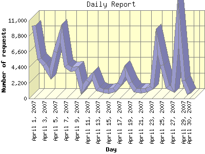

Report generated by Analog 6.0 and Report Magic 2.21
|
Web Server Statistics for "Harish Narayanan (hnarayan) - April 2007" Report generated by Analog 6.0 and Report Magic 2.21 |
The Daily Report identifies the activity for each day within the reporting period. Remember that one page hit can result in several server requests as the images for each page are loaded.

| Day | Number of requests | Number of bytes transferred | Percentage of the bytes | Percentage of the requests | |
|---|---|---|---|---|---|
| 1. | April 1, 2007 | 10,308 | 69.854 MB | 2.81% | 9.61% |
| 2. | April 2, 2007 | 5,596 | 49.878 MB | 2.01% | 5.21% |
| 3. | April 3, 2007 | 4,790 | 86.637 MB | 3.48% | 4.46% |
| 4. | April 4, 2007 | 3,460 | 81.297 MB | 3.27% | 3.23% |
| 5. | April 5, 2007 | 6,580 | 139.410 MB | 5.61% | 6.13% |
| 6. | April 6, 2007 | 9,159 | 119.727 MB | 4.82% | 8.54% |
| 7. | April 7, 2007 | 4,639 | 67.252 MB | 2.71% | 4.32% |
| 8. | April 8, 2007 | 4,159 | 48.607 MB | 1.96% | 3.88% |
| 9. | April 9, 2007 | 4,208 | 60.027 MB | 2.42% | 3.92% |
| 10. | April 10, 2007 | 1,306 | 61.929 MB | 2.49% | 1.22% |
| 11. | April 11, 2007 | 2,432 | 66.212 MB | 2.66% | 2.27% |
| 12. | April 12, 2007 | 3,287 | 43.543 MB | 1.75% | 3.06% |
| 13. | April 13, 2007 | 1,350 | 62.876 MB | 2.53% | 1.26% |
| 14. | April 14, 2007 | 1,062 | 48.097 MB | 1.94% | 0.99% |
| 15. | April 15, 2007 | 1,034 | 109.391 MB | 4.40% | 0.96% |
| 16. | April 16, 2007 | 1,203 | 70.026 MB | 2.82% | 1.12% |
| 17. | April 17, 2007 | 2,049 | 86.928 MB | 3.50% | 1.91% |
| 18. | April 18, 2007 | 3,883 | 116.858 MB | 4.70% | 3.62% |
| 19. | April 19, 2007 | 2,264 | 126.145 MB | 5.07% | 2.11% |
| 20. | April 20, 2007 | 1,158 | 57.684 MB | 2.32% | 1.08% |
| 21. | April 21, 2007 | 1,081 | 86.341 MB | 3.47% | 1.01% |
| 22. | April 22, 2007 | 1,159 | 58.987 MB | 2.37% | 1.08% |
| 23. | April 23, 2007 | 1,502 | 78.760 MB | 3.17% | 1.40% |
| 24. | April 24, 2007 | 8,008 | 145.750 MB | 5.86% | 7.46% |
| 25. | April 25, 2007 | 4,689 | 166.768 MB | 6.71% | 4.37% |
| 26. | April 26, 2007 | 1,647 | 75.963 MB | 3.06% | 1.53% |
| 27. | April 27, 2007 | 1,305 | 76.519 MB | 3.08% | 1.22% |
| 28. | April 28, 2007 | 10,806 | 116.049 MB | 4.67% | 10.07% |
| 29. | April 29, 2007 | 2,526 | 55.787 MB | 2.24% | 2.35% |
| 30. | April 30, 2007 | 652 | 52.786 MB | 2.12% | 0.61% |
Most active day April 6, 2007 : 1,942 pages sent. 10,806 requests handled. 121,686,694.00 served.
Daily average: 3,576 requests handled. 82.870 MB served.
This report was generated on May 10, 2007 10:49.
Report time frame April 1, 2007 00:00 to April 30, 2007 23:54.
| Web statistics report produced by: | |
 Analog 6.0 Analog 6.0 |  Report Magic 2.21 Report Magic 2.21 |